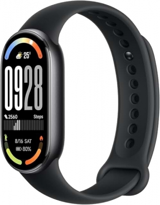
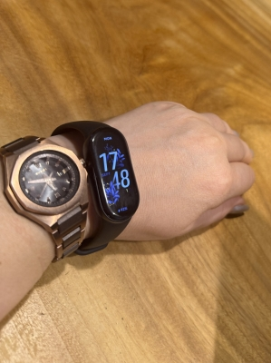

スマートウォッチ買っちゃった
もうずっと前から睡眠のログは取りたいと思っていたんだよね・・・。
ワタクシ、時計は腕時計派なので成人のお祝いでもらった腕時計を
ずっと愛用していたんだけど、とうとう壊れちゃったので
夏前に電池交換不要のお手軽時計に替えたのさ。
TAG HEUER姉さん・・・ありがとう(泣) 2025-6-17 →
前回電池交換をした時に「この次買うならApple Watch」って思って、
その時から睡眠のログが取れることをずっとワクワクしてたんだけど
いざApple Watch買おうと思ったら、いろいろ問題( ? )があってだな。
まず、「けっこう高い」でもこれは仕方ないよね、Apple Watchだもん(笑)。
それに、時計買うってことはある程度の出費は覚悟すべきだと思ってるから納得はした・・・。
だけど「充電がすぐなくなる」は、ちょっとまじめに悩む点だよね ?
睡眠のログ取るためのものだったら寝てない時間に充電すればいいけど
そもそも、時計として使いたいからApple watchじゃん ?
そんじゃ、時計じゃない「睡眠ログ取れる」機器ってなんかある ? って調べてもみたんよ。
そしたら、指輪のウェアラブル端末( ? )を見つけたのだけど
なんかよくわかんない精密機器を購入するならとりあえず日本製か ? と、思ったら
やっぱりお値段はそこそこ高いよね。
充電についても10日前後、長くても2週間は持たない感じだったのよ。
悪くないけど、「じゃ ! すぐ買おう !! 」って即決できる ? って聞かれたら
「・・・ちょっと考えさせてください。」って感じだよね。
時計みたいになかったら困るものではないし、お金に余裕ができたら買おっかな〜って。
そんな時、よくyoutubeで動画を見てるクリエーターの方が紹介してた
ウェアラブル端末に釘付けになりましてん(笑)。
それがこちら
↓

「Xiaomi Smart Band 10」ですの。
なんつっても、充電の持ちがダントツっす。
最長21日って ! ほぼ1ヶ月じゃんー !
そんで、びっくりポイント2つ目 ! 安いっ !
最新モデルでも6280円って・・・おもちゃ ?? (こら 汗)
たぶん中国製なんだけど、フツーにiPhoneとも同期できて
電話とかの通知も受け取れるし、アプリも使いやすそうだったし、ちっちゃいし !
・・・で、ちょうどクレカを新しく発行した時のポイントがあったので
そのポイント使って買ってしまった(笑)・・・あたし、やっちまったか ??
そんで、今現在こーなってます(笑)。
↓

・・・だいぶダサい・・・(爆)。
時計を左右両方の腕につけるのと、どっちがダサい ???
ちなみに・・・
昨日初めて睡眠のログを取ったら「睡眠時間が短すぎます。」って
アプリに怒られました(笑)。
まぁ、知ってたけどね・・・。
ひましゃんはまいにちしゅきなだけねるでしゅ。
ママもしゅきなだけねちゃえばいいじゃないでしゅか ?
パパにおこられるでしゅか ??